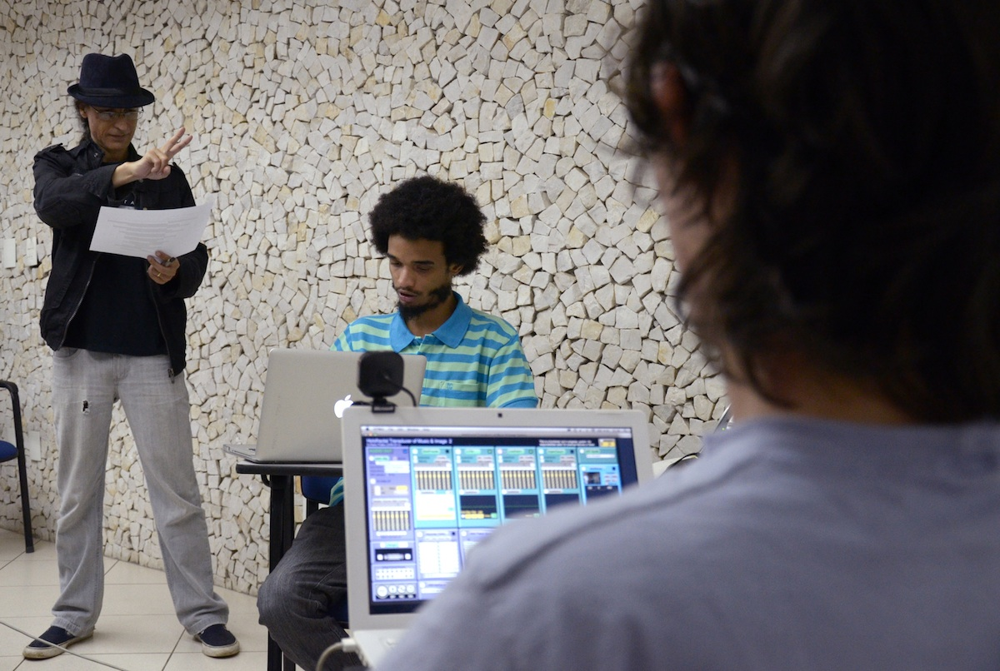

A BSBLOrk - Orquestra de Laptops de Brasília é um coletivo de música algorítmica interativa experimental, inspirado por inovações no formato de execução de música computacional -- inicialmente pelo uso de amplificação individual acusmática, ao tocar por hemisferas multicanais, agora incorporando a teleperformance intercontinental por network live streaming e agentes de Inteligência Artificial. Desde sua fundação em 2012, na 11a. edição do festival "Tubo de Ensaios" da UnB, tem a proposta de integrar o corpo humano em movimento à produção de sons e imagens diretamente dele derivados, como meio de realizar trabalhos ecosóficos que enfatizem o respeito ao meio-ambiente, a conscientização para o desenvolvimento humano como liberdade e a inclusão social.
O ponto de partida estético dos trabalhos da BSBLOrk é o questionamento crítico das linguagens e técnicas musicais, integradas à dança, artes visuais e performance, buscando experimentar processos criativos verdadeiramente contemporâneos, no sentido da construção colaborativa de um novo paradigma holístico e sistêmico, holonômico e fractal. Acreditamos que não basta dizer coisas novas, mas encontrar sobretudo novas formas de dizê-las, o que só a linguagem poética permite a partir da abertura ao imprevisível dos processos híbridos, interativos e transmidiáticos da livre improvisação assistida por inteligência artificial.
Desde o início, em 2012, a orquestra foi concebida por Eufrasio Prates, bacharel em Música e doutor em Arte, para atuar também em conjunto com o grupo de dança experimental Corpo Baletroacústico, coordenado por Cínthia Nepomuceno, graduada em dança pela Unicamp, doutora em Arte Contemporânea pela UnB e professora de dança no IFB - Instituto Federal de Brasília, em parceria com Prates.
A BSBLOrk valoriza o uso de recursos tecnológicos computacionais como método de expansão das capacidades expressivas da música, embora se preocupe em mantê-los no mesmo lugar valioso, ainda que intermediário, de qualquer outro instrumento musical. Por essa razão, prioriza técnicas e meios que respondam bem à organicidade do corpo humano em movimento expressivo, como realizado pelo sistema HITS Holofractal Interativo de Transdução de Som e Imagem, software musical livre, código aberto e gratuito desenvolvido por Prates, fundador e regente da orquestra, em seu doutorado. Tais recursos oferecem possibilidades inauditas de criação e caminham de forma integrada aos conceitos poéticos de um novo paradigma, buscando um salto quântico para a interpretação musical e expressão estética.
Com vistas a ter o computador como um instrumento musical, a BSBLOrk busca nas hemisferas o meio de focalizar e espacializar a emissão sonora individualmente, nos moldes de um instrumento acústico.
Na celebração de seus 10 anos de (r)existência, a orquestra realizou, com recursos do Fundo de Apoio à Cultura do Distrito Federal, a rpg-ópera CAoHTiCCa: Cáustica Anti-ode Holofractal ao Tecno-imperialismo Comunista e Capitalista. Vários aplicativos gratuitos em código aberto, como o FrakMSP Fraktal Movement Sound Player, o FraKontrol, o Fraktal Glass Bead Escape Room e o Fallout Chuva Radioativa foram desenvolvidos também com patrocínio do FAC/DF e estão disponíveis para download em holofractalmusic.
Desde o princípio, o coletivo BSBLOrk tem recebido significativo reconhecimento do público, da mídia e institucional. Tanto que, ainda com menos de um ano de atividade, foi premiado no edital nacional Coletividea, sob patrocínio do MinC, para produzir vídeo-documentário de uma de suas participações dando apoio musical ao coletivo de performance e dança Corpo Baletroacústico de Brasília, além de obter matérias de página inteira no Correio Braziliense e outros meios (vide prints adiante). Ao longo dos anos esse reconhecimento aparece também nos registros acadêmicos, como os anais do XII Encontro Internacional de Arte e Tecnologia (2013) e em diversos artigos, teses de mestrado e doutorado. Além da participação em grande número de eventos, a Orquestra recebe convites para apresentar-se em outras cidades brasileiras e em diversos países da Europa (Portugal, Bélgica, Escócia, Eslováquia, Áustria e Alemanha); no momento, busca parceiros e financiamento para essas turnês, como forma de disseminar não apenas o seu próprio trabalho, mas também compartilhar o seu modus operandi como tecnologia social (incluindo os softwares livres gratuitamente oferecidos) e estimular a proliferação de conjuntos musicais similares.
Direção musical e regência: Eufrasio Prates
Músicos: Anesio Azevedo (Stellatum_), Eduardo Kolody, Elias Nascimento Filho, Eufrasio
Prates (euFraktus X), Joenio Costa (djalgoritmo),
Jackson Marinho, Leo Pimentel (Amante da Heresia), Marika C. Morcelli, Philip Jones (Mentufacturer), Victor Hugo A.
Araujo (Lowbin).
Programação visual e iluminação: Eufrasio Prates e Jackson Marinho.
Convidados especiais: Biophillick, Bryan Day, Ciberpajé.
Contato: 55(61)98151-9100